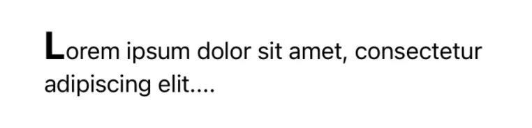
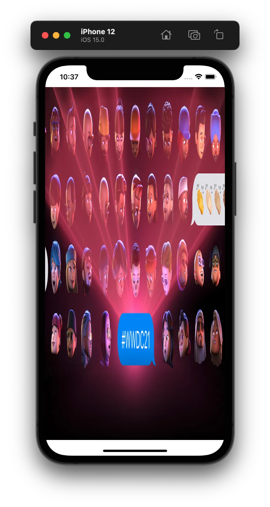
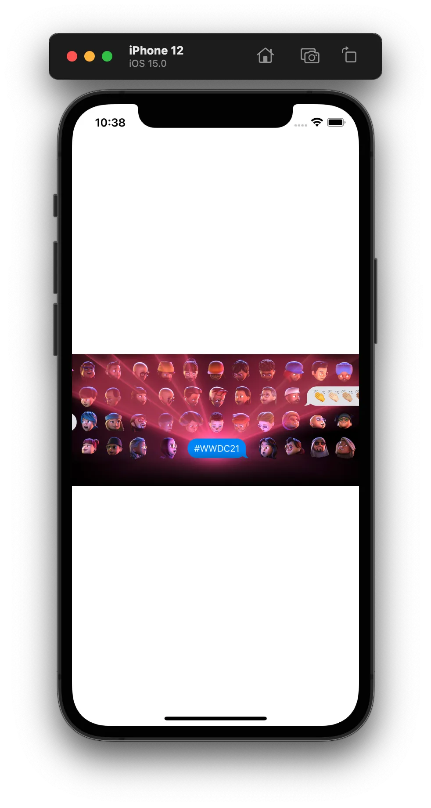
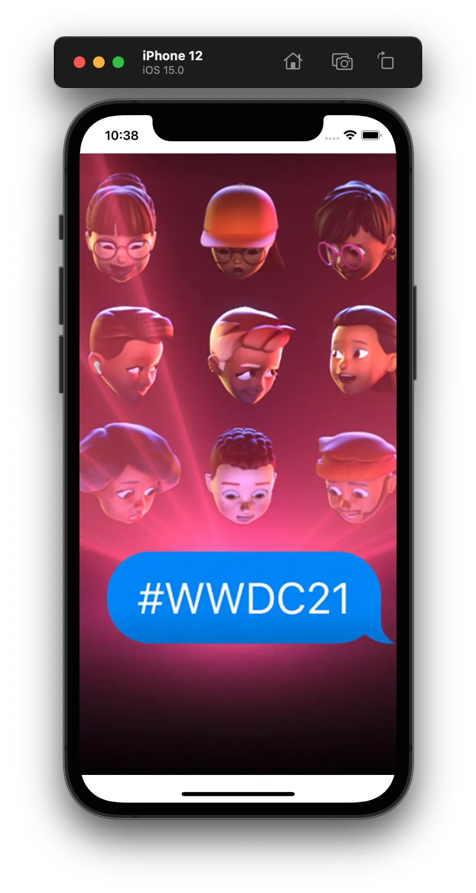
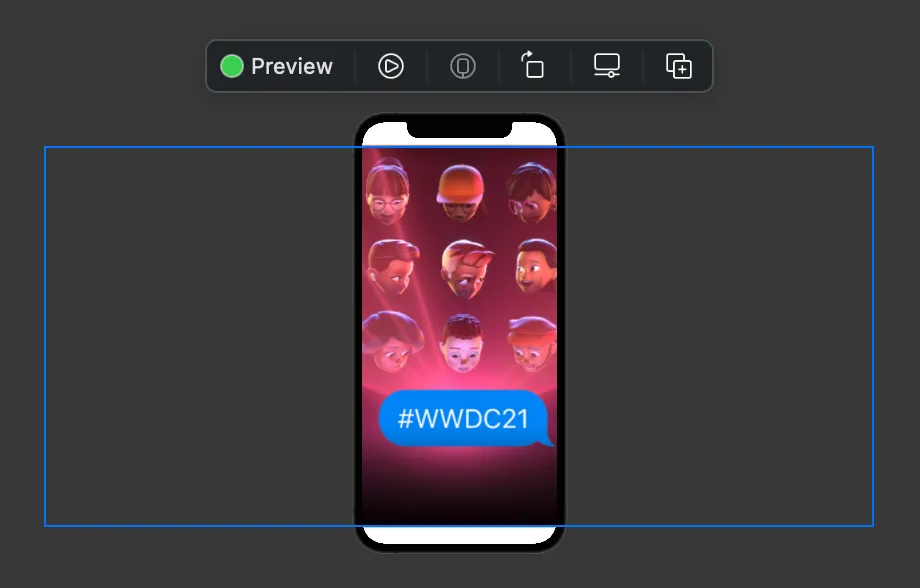
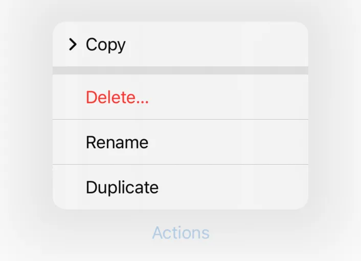
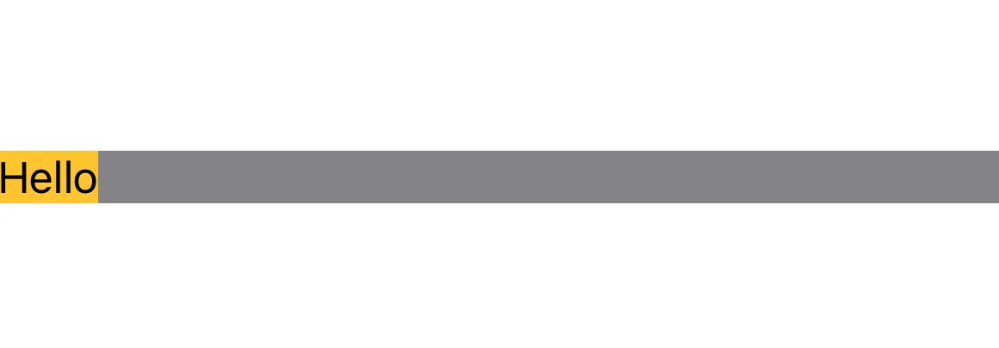
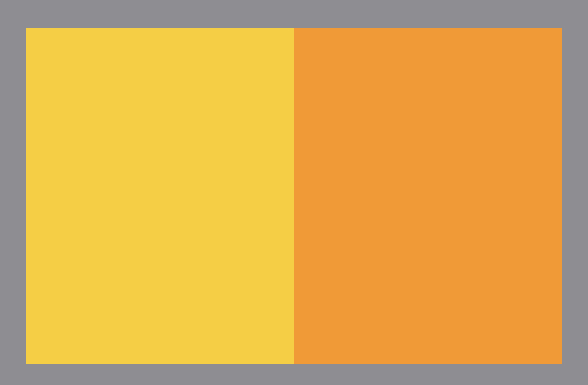

构建 View
接下来，我们将展开介绍如何构建 View。
View 的组合方式¶
在 body 中，有一些非常方便的方式来组合不同的 View。另外，body 还对其中的表达式有一定的限制。
组合¶
在 body 中，你可以通过这几种方式组合多个 View，不需要写出 return：
条件控制语句
你可以用 if-else 语句有条件地显示不同的 View：
1 2 3 4 5 6 7 | |
或者，只有 if：
1 2 3 | |
当然，if let 语句也是可以的：
1 2 3 | |
你还可以用 switch：（实际上编译器将其转化为 if-else 语句）
1 2 3 4 5 | |
多个 View
你可以一次返回多个 View，这种 View 叫做 TupleView：
1 2 3 | |
一般这种 TupleView 多用于 View 的排列。比如，将几个 View 在垂直方向依次排列：
1 2 3 4 | |
我们将在下面进一步介绍 View 的排列。
VStack 构造函数的参数
上面的 VStack 以及大括号包括的内容，实际上是 VStack 的构造函数。根据文档，VStack 构造函数的签名如下：
1 | |
我们前两个参数使用了提供的默认值，我们提供的实际上是第三个参数 content：它是一个无参数、返回值为 Content 的匿名函数。（这里的 Content 是 VStack 的模版参数，表示「内容 View 的类型」）
在 Swift 中，如果函数的最后一个参数为函数，那么它可以写到括号外面，并且省略标签。上面 VStack 的构造函数实际上是：
1 2 3 4 | |
顺便说一句，content 的返回值的类型是 TupleView<(Text, Image)>，并不是一个真正的 Tuple。
表达式¶
body 与普通函数不同，它对函数体内的允许的表达式有限制。
同时进行变量的声明和赋值是允许的：
1 2 3 4 | |
但 var 和 let 的声明、赋值表达式不被允许：
1 2 3 4 5 6 7 8 9 10 11 12 | |
另外，for 循环也是不被允许的。我们有另外的方法进行类似的迭代。
上述例子中，类型遵循 View 的值（如 Text(description)）会作为部分结果（partial result）递归地参与 body 最后结果的计算，而其余允许的表达式（如 let description = x > 127 ? "overflow" : "normal"）在计算 body 的值的时候会被忽略。
简单介绍 ViewBuilder
实际上，body 之所以能够有这些特性，是因为 body 有隐式的 @ViewBuilder 修饰：
1 2 3 4 | |
被 @ViewBuilder 修饰的函数，不使用显式的 return 来返回，而是通过“收集”函数体中的View 来构建最终的返回值。比如：
1 2 3 | |
编译器“收集”到两个 View：Text 和 Color（忽略 let greeting = "Hello"）。接着，调用 ViewBuilder 的一个构建 View 的函数：
1 | |
这个函数接受两个 View 作为参数，最终生成单个返回值 TupleView<(Text, Color)>。
其他的特性，比如 if-else 语句，都是由类似的机制来实现的。不难理解，只要不断递归地将 View 合并，最终就能生成一个单一的返回值。
ViewBuilder 的机制实际上是通过一种叫 result builder 的语法实现的。如果感兴趣可以参考 SE0289: Result builders。
一些常用的 View¶
我们终于基本介绍完相关的语法规则了，接下来就是利用各种原生的 View 来构建我们的 UI 了。在这里只会介绍各种 View 最基本的用法，其余用法请参考开发者文档。
你最好亲自尝试一下下面的代码，并在预览模式中实时查看。
组件¶
只读文本 Text
用于显示只读文本。
你可以从字符串创建：
1 2 3 4 | |
结果为：

也可以用 Markdown 字符串创建带格式的文本。注意只有字面值能够直接渲染为 Markdown 格式，对于字符串变量需要 AttributedString：
1 2 3 4 5 | |
结果为：
可以使用 .font(_:)、.foregroundColor(_:)、.italic(_:) 等 modifier 改变字体、颜色等：
1 2 3 4 5 | |
最终的效果为：
最后，值得一提的是 Text 的加法运算符，它可以将两个样式不同的 Text 拼接在一起：
1 2 3 4 | |
效果为：

图片 Image
显示图标或资源文件图片。
添加图片资源的方法
- Swift Playgrounds：将图片拖动到文件目录中
- Xcode Project：将图片拖动到
Assets.xcassets中。
使用 Image(systemName:) 显示系统图标：
1 | |
结果为：
Info
关于系统内置图标的查询，请参考 SF Symbols。
使用 Image(_:) 显示资源文件。
比如，我们有一个如下图的名为 wwdc21 的图片文件：
以下几种不同的代码会产生不同的结果：
1 2 3 4 5 6 7 8 9 10 11 12 13 14 15 16 | |
| Case 1 | Case 2 | Case 3 | Case 4 |
|---|---|---|---|
| 图片原有尺寸 | 占满可获得的空间 | 按原有比例适合空间 | 按原有比例占满空间 |
 |
 |  |  |
一个 Image 如果不加上 .resizable() 的话只会按照固有像素显示，只有加上 .resizable() 才能进行缩放。.aspectRatio(_:contentMode:) 使得 Image 能够根据可用空间和长宽比进行缩放。
Image 的布局性质
注意，Image 所占的空间可能会超出可用的空间。对于上面的 Case 4，在 Xcode 预览中选中图片，可以看到其大小：

这种性质在很多地方会有意想不到的效果，如即将介绍的 ZStack。如果需要将图片限制在可用空间内，可以使用 Color，它仅占据所有可用空间：
1 2 3 4 5 | |
图标 & 文字 Label
显示图标和文字。
1 | |
效果为：

另外，你可以用 .font(_:) 修改其字体。
Label 的特殊之处
Label 相较于普通的左右排布（接下来要介绍的 HStack）的特殊之处在于，在某些系统原生的排列中，多个 Label 的图标和文字会自动对齐。
按钮 Button
按钮。
文字按钮：
1 2 3 | |
以一个 View 作为按钮：
1 2 3 | |
上面的代码也可以写成：
1 2 3 4 5 | |
Multiple Trailing Closures
如果一个函数最后若干个参数均为函数，如：
1 | |
那么，调用时这些函数参数可以写到小括号外面，第一个可以省略标签，其余需要加上标签：
1 2 3 4 5 6 7 | |
这种写法是 Swift 中一种叫 multiple trailing closures 的语法，详见官方文档。这种写法能提高代码的可读性，我们之后会尽量采用这种写法。
另外，我们可以用 .buttonStyle(_:) 来使用系统默认的一些样式：
1 2 3 4 | |
效果为：
菜单 Menu
创建点击显示的菜单。
1 2 3 4 5 6 7 8 9 10 11 | |
值得注意的是，可以在一个 Menu 中内嵌另一级 Menu。
效果为：

另外，可以用类似的方法给任何 View 添加长按菜单：
1 2 3 4 5 6 | |
布局与排列¶
水平布局 HStack
水平布局。
1 2 3 4 5 | |
效果为：

另外，HStack 还有两个可选参数 alignment 和 spacing，用于设置对齐和间距。比如，HStack(alignment: .top, spacing: 20) 将使子 View 在顶部对齐，两两之间的间距为 20。
不同 View 具有不同的布局特性
注意到，三个 Text 并没有占满所有所有空间，而是只占据了所需要的最小空间，这是由 Text 的布局特性决定的。与之相对，Color 将尽可能占据多的空间：
1 2 3 4 5 | |
效果为：

不同的布局特性对我们排布多个 View 有重要影响。
限于篇幅，这部分内容无法展开叙述。总的来说，原生 View 有如下两类布局特性：
- 仅占需要的空间，如
Text、Label - 占据尽可能多的空间，如
Color、Spacer、VStack等
通过 fixedSize、layoutPriority、frame 等 modifier，可以更改 View 的布局特性，在此不再展开。
垂直布局 VStack
垂直布局，与 HStack 类似。
1 2 3 4 5 | |
效果为：
上下布局 ZStack
上下布局，先写的 View 排布在底层。
1 2 3 4 | |
效果为：
与 HStack 和 VStack 类似，你可以通过构造函数中的 alignment 参数指定这些 View 对齐的方式。
ZStack 和 .overlay(_:)
我们还有另外一种方式进行 View 的层叠：
1 2 3 4 | |
看上去与 ZStack 并无二致，其实不然。我们用 .frame() 显示地指定 Color.yellow 的长宽，来比较一下这两种方式：
1 2 3 4 5 6 7 8 9 10 11 12 13 | |
效果分别为：
ZStack |
.overlay() |
|---|---|
可以看到，ZStack 以最大元素的大小作为其大小，而 .overlay() 始终限制在被其修饰的 View 的大小内。
间距工具 Spacer
间距工具。
Spacer 是一个弹性的间距。它本身不会显示，只是占据大于或等于特定宽度/高度的空间。
例如：
1 2 3 4 5 6 | |
Note
这里的 .background(_:) 只是为了更明显地显示 HStack 内部的排列。
效果为：

我们注意到，整个 Text 被“挤”到了左边。
我们在上面提到了「大于或等于特定宽度/高度」。Spacer 构造函数有一个参数 minLength，就是用来指定这个距离的，上面我们忽略了这个参数，使用系统默认的距离。
需要注意的是，Spacer 会占据 View 所不需要的空间，但不会挤占 View 需要的空间（即：Spacer 排布的优先级最低）。比如，对于之前提到的会占据所有空间的 Color：
1 2 3 4 | |
Spacer 只占据了默认的最小空间。实际上，如果你把 Spacer 的 minLength 参数设置为 0：
1 | |
对于 Color 的情况，Spacer 就不会占据任何空间。然而，对于上面 Text 的情况，它仍然会占据所有剩余的空间。
另外，如果需要固定宽度/高度的 Spacer，可以使用 .fixedSize()：
1 2 | |
其他容器
SwiftUI 中还有很多用于排布的容器 View，不再展开，具体可以参考 官方文档。一些常用的 View 有：
ScrollView：可滑动视图List：设置等系统 app 使用的列表视图NavigationView：设置等系统 app 使用的可滑动返回的导航视图TabView：时钟等系统 app 使用的分页视图LazyVStack和LazyHStack：惰性 Stack 容器LazyVGrid和LazyHGrid：网格容器
练习：原生 View 与基本布局
利用 VStack、HStack 和其他原生 View，构建一个如下图所示的 View：

提示：
- 一个固定大小的圆可以用
Circle().frame(...)生成 - 图标对应的 system name 为
star
参考代码
1 2 3 4 5 6 7 8 9 10 11 12 13 14 15 16 17 18 19 20 21 22 23 24 25 26 27 | |
注意，最外层 VStack 的 alignment 参数为 .leading。请思考其中的原因。
组合¶
Group
将多个 View 组合起来处理，或用于添加逻辑控制。
一个 Group 对其中的子 View 没有任何影响，各个 View 仍然保持独立，对 Group 添加 modifier 相当于给每一个 View 添加 modifier：
1 2 3 4 5 6 7 8 | |
效果为：

我们常用这种方法同时给多个 View 添加相同的 modifier。
另外，Group 的参数为 @ViewBuilder，可用于在某些不支持 if-else 语句等地方添加逻辑控制。如：
1 2 3 4 5 6 7 8 | |
Note
请查阅 .overlay() 的文档，找出这里的 .overlay() 和上面 ZStack 中提到的 .overlay() 的区别。
ForEach
迭代一个集合内的元素，并依次生成 View，类似于 for 循环。
1 2 3 4 5 | |
但是，不能简单地迭代任意一个数组：
1 2 3 4 5 | |
编译器会报错：
1 | |
意思是，所迭代数组的元素的类型必须遵循 Identifiable。简单来说，因为 SwiftUI 更新时需要确切知道哪个 View 依赖的数据更新了，生成 View 的数据必须是可以相互区分的。
通过使数组元素的类型遵循 Identifiable，我们便可以安全地通过 ForEach 迭代数组，注意 id 必须互不相同，否则可能会导致崩溃：
1 2 3 4 5 6 7 8 9 | |
在数组固定的情况下，也可以使用 count 或 indices 进行迭代，此时需要显式指出用于区分的 id：
1 2 3 4 5 6 7 8 9 | |
这里 \.self 用到 Swift 的 KeyPath，\.self 的意思是返回下标本身（Int），使用其所为区分不同元素的 id。
Info
关于不同 View 在底层是如何区分的，参考 WWDC21: Demystify SwiftUI。
另外，需要注意的是 ForEach 和 Group 类似，并不把其中的 View 变成一整个 View；对其添加 modifier 相当于对各个子 View 添加。
Modifier¶
Modifier 的种类¶
不同 View modifier 的不同效果常常令初学者迷惑。一般来说，View modifier 的类型有如下几类：
改变环境变量，对其作用范围内的所有 View 均有效
典型的例子是 font、foregroundColor 等。比如：
1 2 3 4 5 6 7 8 9 10 11 | |

这里，.font(.title3) 和 .foregroundColor(.orange) 对 VStack 内处于任意层级的 View 均有效。
仅修饰最外层 View
典型的例子是 padding：
1 2 3 4 5 6 | |

在这里，padding 仅在 HStack 外添加了边距，而对其中的两个 Color 无影响。
返回特定类型的 View
这些 modifier 并不是返回 some View 而是特定类型，因此后续可使用的 modifier 更多，最典型的是 Text：
1 2 3 4 5 | |
上面四个 modifier 的返回值均为 Text，因此可以使用如 italic 这类只能用于 Text 的 modifier。
自定义 modifier¶
可以通过 extension 将一些样式组合成 modifier，方便重用：
1 2 3 4 5 6 7 8 9 10 11 | |
另外，可以通过 ViewModifier 协议定义作用更强的 modifier，可以拥有状态（见 数据流基础），在这里不再赘述。